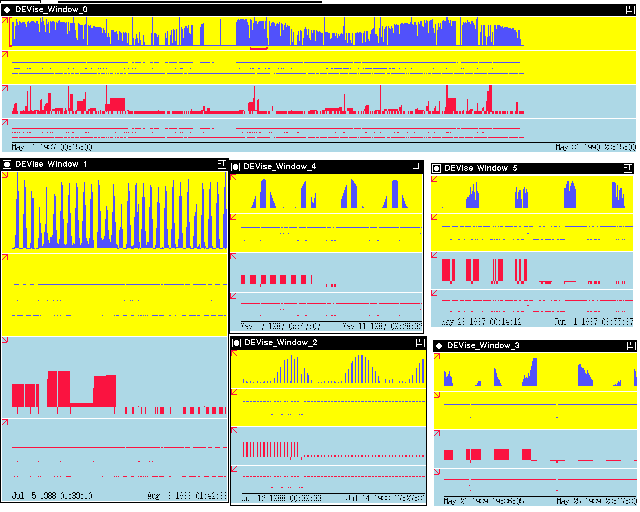
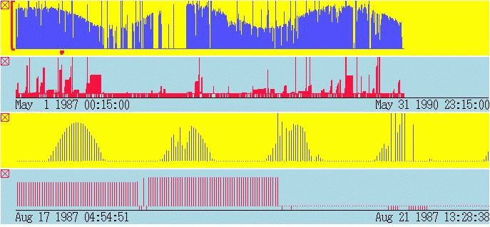

Soil Science Example

Input Data
The input data:
- are gathered from sensors stored in the ground.
- contain attributes: data quality, date, solar radiation, rain,
wind velocity, temperature, pressure, etc.
The input file looks like:
'8639-SAM',21,01-MAY-87,15,24.06,16.85,958.8,0.0,0.0,-6.61,4.52,.09,10.68,.4,22.56,24.43,16.58,37.69,43.44,-8.54,210.09,210.08,161.58,472.54,99.51,295.69,'GGGGGGGGGGGGGGGG*GGGC*** ',23-MAY-89,'CPI-MRG'
'8639-SAM',21,01-MAY-87,45,22.83,16.28,958.85,0.0,0.0,-6.11,3.94,.06,10.24,.38,20.8,24.04,16.58,16.29,-6.07,-9.23,210.09,210.08,65.85,196.59,39.0,116.72,'GGGGGGGGGGGGGGGG*GGGGGGG ',23-MAY-89,'CPI-MRG'
...
Problem
We are trying to find lots of rain before a clear day.
Visualization
Click here to see our model of creating
visualizations.
The visualization is created as follows:
- Define Window 0 showing the global picture: solar radiation
versus date, quality of solar radiation versus date, rain versus date,
and quality of solar radiation versus date.
- link the X axes of the views.
- Define Window 1 as a copy of Window 0. It shows a zoomed in
view.
- Create a cursor to show the relationship between the Window 0 and
Window 1.
- Navigate Window 1 to find areas where there are lots of
rain before a clear day, using the top views are reference points.
- Windows 2, 3, 4 and 5 are windows that have been duplicated, showing
possible places where there are lots of rain before a clear day.
Observations
Here is a close up of a different window. The top two views are
global pictures of solar radiation and rain. The bottom two
views are zoomed in pictures.

- This example shows need need to generate different views
of the same data, and to keep track interesting places in the data.
- Seasonal variation in the solar radiation observed for
the first view: high in the sumer, and low in the winter.
- Seasonal variation in the rain observed for the
second view: high in the summer and spring.
- Daily variation in the solar radiation, shown in the third
view: radiation is high around noon.
- Lots of rain before a clear day observed for the 3rd and fourth views.